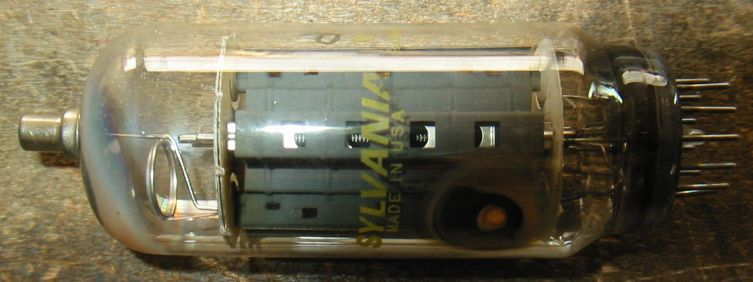
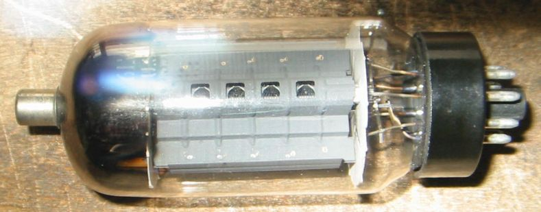

6KD6について
6KD6は6JS6と同じように無線送信機の終段管として知ることになりました。
たしかにその大きさは、送信管としてもおかしくはないくらいです。
6KD6シングル・スクリーングリッドドライブ・アンプ
6JS6シングル・スクリーングリッドドライブ・アンプにプレートキャップを増設して動作させています。
ほかは何も変えていないので、6KD6としては軽い動作です。それにしてもIk=40mAとは？この球がJUNKなせいです。
2010年４月１記載
いろいろな6KD6
メーカ不明のJUNKな6KD6、内部がかなり黒くなっており、いわゆるエミゲンで電流があまり流れません。
Sharp 30KD6
Sears 36KD6 【名】シアーズ◆アメリカのデパート。電化製品が充実している。比較的庶民的。
Sears 30KD6&Silvertone 40KD6 6KN6/42KN6と同じように内部で2つの管が並列になっています。
作りが全く同じなので、メーカーは同じ(GE?)だと思われます。
SILVANIA 6KN6 この6KN6は内部がシングルです。

MOTOROLA 6MH6
Ef/If=6.3V/2.65A、Ep/Pp=990V(peak)/38.5W、Esg/Psg=275V/7W、Gm=14000、μ2=4.0 (GE)
GE 20LF6 Made in Holland 松下の40KG6Aと同じようなガラスの作りです。
下側はPHILIPS製のEL509と並べたもの、頭のキャップと足が違うだけで、内部の電極は見分けがつきません。
Ef/If=20V/0.6A、Ep/Pp=990V(peak)/40W、Esg/Psg=275V/7W、Gm=1400、μ2=4、管壁温度最高300℃、（Sylvania）
GE 6LF6/6MH6 GE
Ef/If=6.3V/2.0A、Ep/Pp=990V(peak)/40W、Esg/Psg=275V/7W、Gm=14000、μ2=4、管壁温度最高300℃、（Gm、μ2は6MH6の値）

GE 6LW6
Ef/If=6.3V/2.65A、Ep/Pp=990V(peak)/40W、Esg/Psg=280V/7W、Gm=、μ2=

TV水平出力管のページに戻る